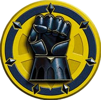

Adeptus Astartes — VIIth Legion
Terra's Shield
The Imperial Fists are one of the First Founding Chapters of the Space Marines and were originally the VII Legion of the Legiones Astartes raised by the Emperor Himself from across Terra during the Unification Wars
Discover the ChapterChapter Lore
Founders of fortresses. Masters of siege. Builders of the Imperium.
The Imperial Fists are one of the First Founding Chapters of the Space Marines and were originally the VII Legion of the Legiones Astartes raised by the Emperor Himself from across Terra during the Unification Wars.
Dorn and his Legion proved the masters of every aspect of warfare, but in particular the Imperial Fists excelled at siege craft, whether on the attack or the defence. This propelled them into a bitter rivalry with the Iron Warriors Legion and their jealous primarch Perturabo, the flames of which were wantonly fanned by Fulgrim, the primarch of the Emperor's Children Legion.
The space fleets and warships of the Imperial Fists were the greatest of the age. While Phalanx may be the greatest warship ever built by Human hands, there were other warships, both great and small, whose renown reaches down through the annals of history even to this day. The Imperial Fists' Chapter fleet includes the Gothic-class Cruiser Imperial Power, as well as Cobra-class Destroyers which are used as Escorts. At least three Imperial Fists Strike Cruisers took part in the attack on the Chaos forces located at the Peleon's Belt Heretic anchorage.
Though Rogal Dorn was lost to the Imperium subsequent to the war-torn age of the Horus Heresy, his legacy remains one of the strongest of all of the primarchs. The Imperial Fists sired three Second Founding Successor Chapters -- the Imperial Fists themselves, the Crimson Fists and the Black Templars. Between them, these three Chapters hold as many battle honours as dozens of later created Adeptus Astartes formations, and their brethren have served with skill and distinction on countless thousands of battlefields across the galaxy.
"The time for speeches is done, The first great test is here. My order to you all is simple, yet heed it well, and exert yourselves to see it done. They are coming. Kill them all.
— Rogal Dorn, opening stages of the siege of Terra